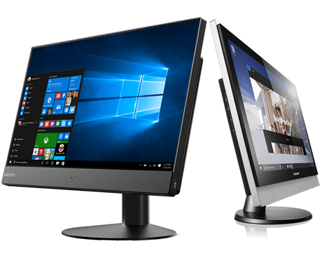
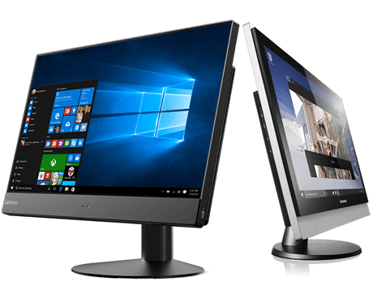
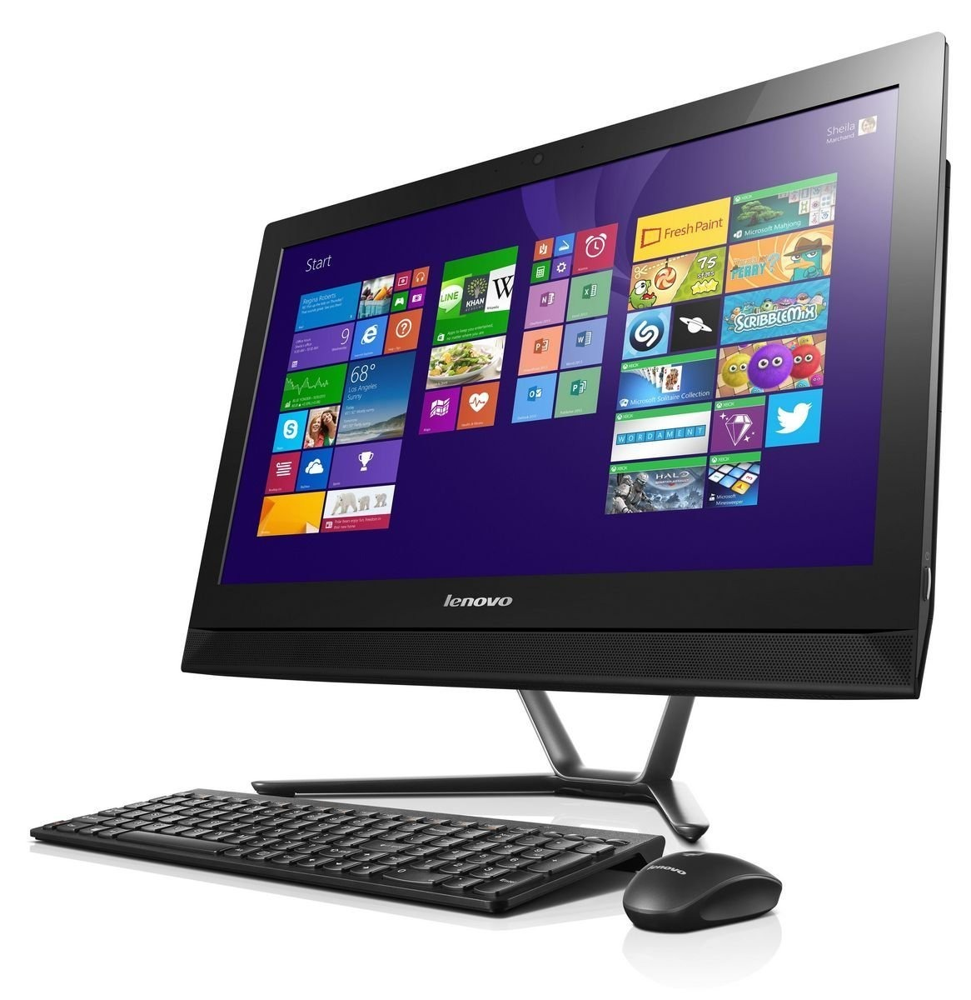
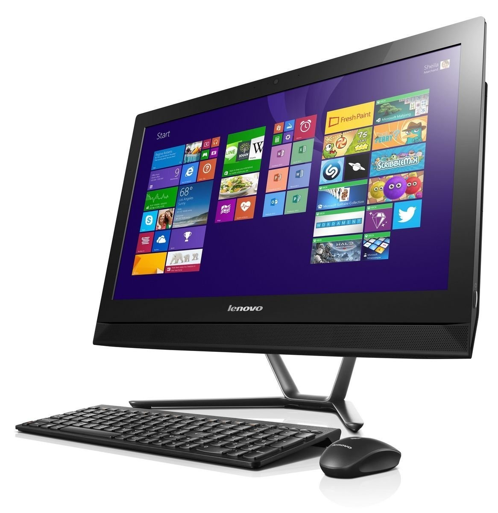

INICIO
Computadoras
 

 

Tema:
RadioShack Corporation (ex-Tandy Corporation) es una empresa estadounidense, que gestiona una cadena de tiendas de artículos y componentes electrónicos en Estados Unidos y México, propiedad de Standard General. Se asoció con la compañía de celulares Sprint, y la mayoría de las tiendas son de marca "Sprint", aunque también venden artículos de RadioShack. Fundada en 1921, tuvo su máximo auge en 1999, cuando operaba tiendas en Estados Unidos, México, Reino Unido, Australia y Canada. El 5 de febrero de 2015, la compañía clasificó para entrar en la protección del capítulo 11 de la ley de quiebras de Estados Unidos, luego de 11 trimestres consecutivos de pérdidas.12 Luego de esto, opera sólo en Estados Unidos y México. El 31 de marzo de 2015, la Corte de Quiebras de Estados Unidos para el Distrito Norte de Texas aprobó una oferta de USD 160 millones de General Wireless, obteniendo la propiedad de 1.743 locales RadioShack, y arrendándolos inmediatamente a Sprint. En abril de 2015 Grupo Unicomer, con sede en San Salvador, adquiere las marcas, la propiedad intelectual y los contratos de los franquicitarios existentes de RadioShack para toda Centroamérica, Suramérica y el Caribe 3